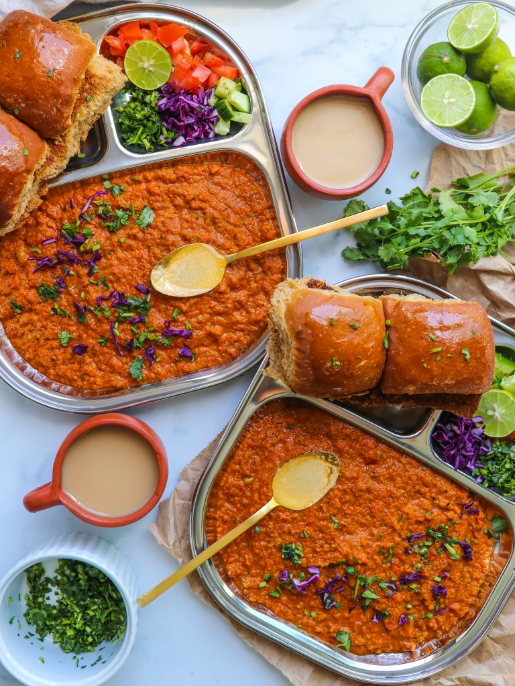

Pav-Bhaji

Pav bhaji, a beloved Indian street food, presents a spicy and flavorful
vegetable mash served with buttered bread rolls, creating a hearty and
satisfying meal that tantalizes taste buds with its rich blend of spices
and textures.
Ingredients
- Butter
- Tomatoes
- Green peas
- Capsicum
- Raw banana
- Cauliflower
- Pav bhaji masala
- Coriander leaves
- Lemon
- Pav
Recipe
- Boil and mash the vegetables.
- Heat butter in a pan and sauté the vegetables.
- Add pav bhaji masala and salt to taste.
- Toast the pav with butter.
- Serve the bhaji with a dollop of butter, chopped onions, and lemon wedges.
- Enjoy the delicious pav bhaji with the buttered pav!